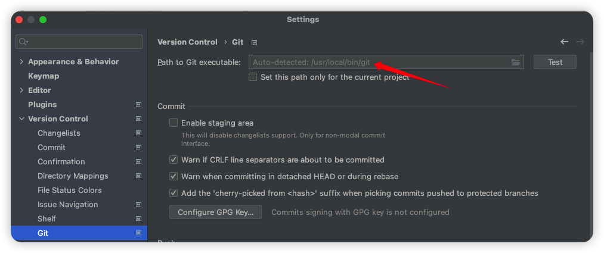
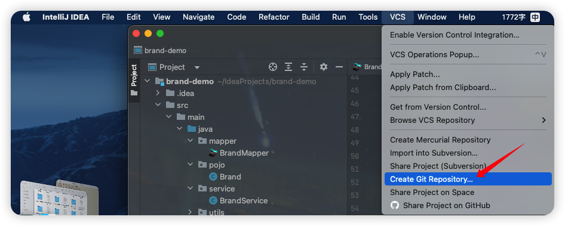
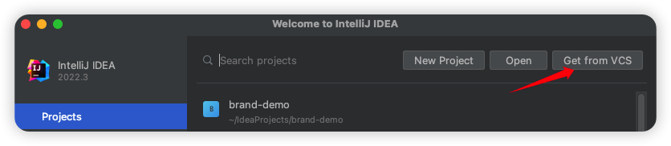
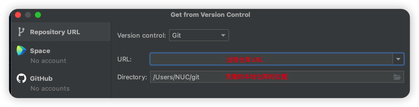
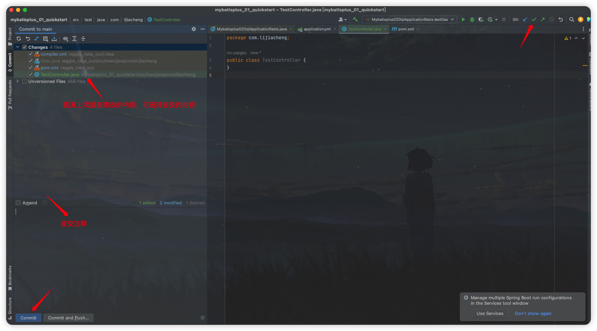
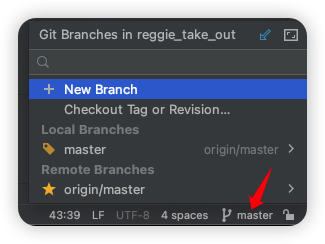
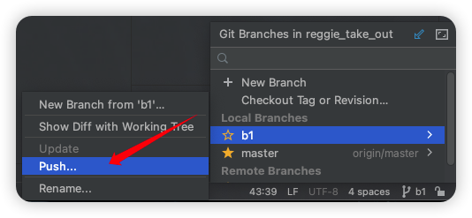

IDEA中集成git
这篇博客主要记录git的常用命令以及在IDE中集成git简化版本控制操作。
git安装以及更新（macOS）：安装Homebrew
git常用命令
git全局设置
git版本
1
git --version
设置用户信息
1
2git config --global user.name "KiCheng"
git config --global user.email "lijiacehng053@gmail.com"查看配置信息
1
git config --list
获取本地仓库
在本地初始化一个git仓库（不常用）
1
git init
从远程仓库克隆（常用）
1
git clone [URL]
本地仓库操作
查看文件状态
1
git status
将文件的修改加入暂存区
1
git add [文件名] / git add .
将暂存区的文件取消暂存或者是切换到指定版本
1
2git reset [文件名] / git reset .
git reset --hard [版本号]将暂存区的文件修改提交到本地版本库
1
git commit -m "[注释内容]"
查看日志
1
git log
远程仓库操作
查看远程仓库
1
git remote / git remote -v
连接到远程仓库
1
git remote add [远程仓库名(通常是origin)] [URL]
从远程仓库克隆
1
git clone [URL]
从远程仓库拉取
1
git pull [远程仓库名] [分支名]
推送到远程仓库
1
git push [远程仓库名] [分支名]
分支操作
查看分支
1
git branch
创建分支
1
git branch [分支名]
切换分支
1
git checkout [分支名]
推送至远程仓库分支
1
git push [远程仓库名] [分支名]
合并分支
1
git merge [分支名]
分支合并时冲突：手动处理合并冲突再重新
add+commit -i.
标签操作
列出已有标签
1
git tag
创建标签
1
git tag [标签名]
将标签推送至远程仓库
1
git tag [远程仓库名] [标签名]
创建新分支检出标签
1
git checkout -b [新建分支名] [标签名]
IDEA中集成git
获取本地仓库
方法一：本地初始化仓库
路径选择IDE中的demo目录即可。
方法二：从远程仓库克隆


本地仓库操作
将文件加入暂存区
IDEA会弹出提示框，自动把新建或修改的文件add到暂存区，也可以手动添加。
未加入暂存区的文件是红色的，加入暂存区的文件是绿色的：

- 将暂存区的文件提交到版本库

- 查看日志

远程仓库操作
- 查看并添加远程仓库
- 推送至远程仓库

- 从远程仓库拉取
分支操作

将分支推送到远程仓库
合并分支
本博客所有文章除特别声明外，均采用 CC BY-NC-SA 4.0 许可协议。转载请注明来源 KiCheng's Blog！